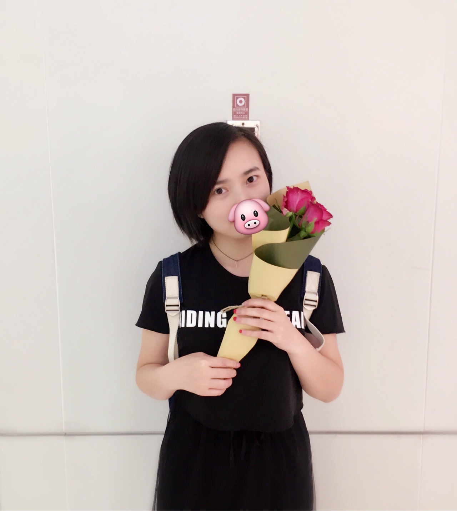
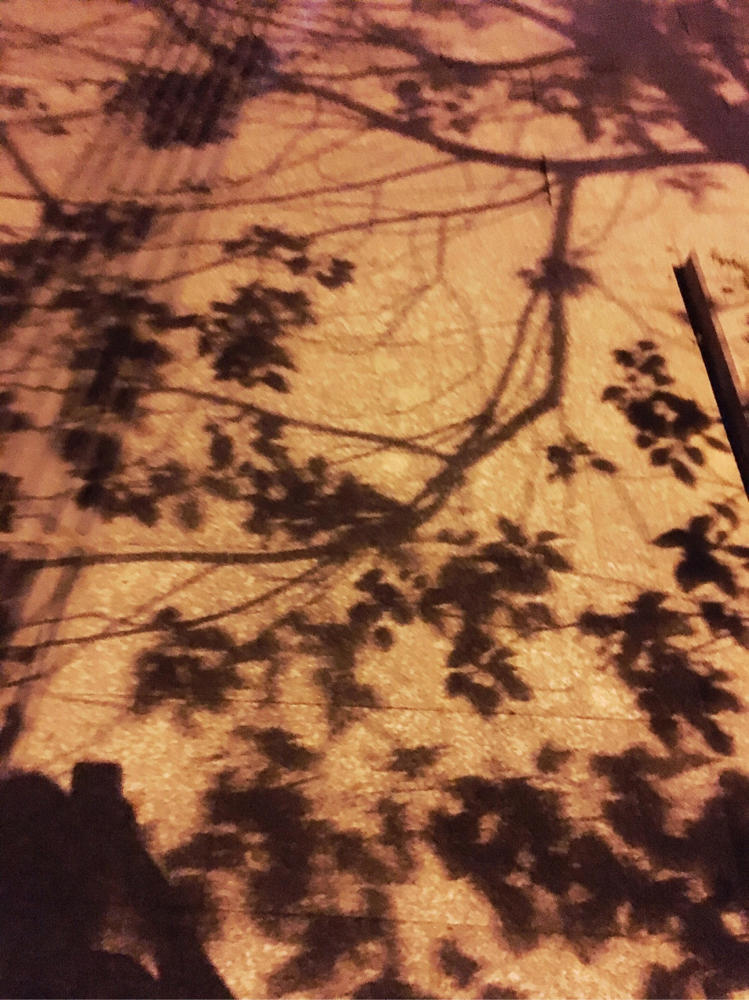
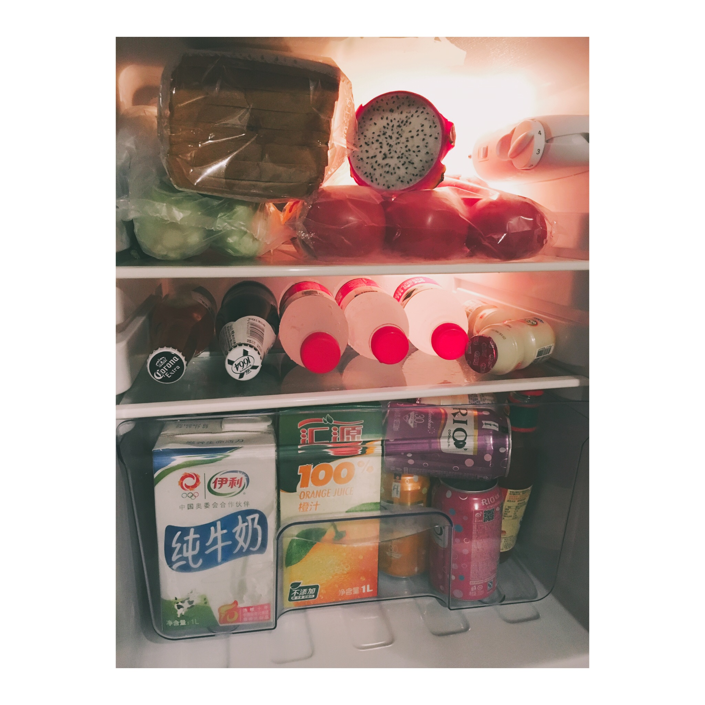
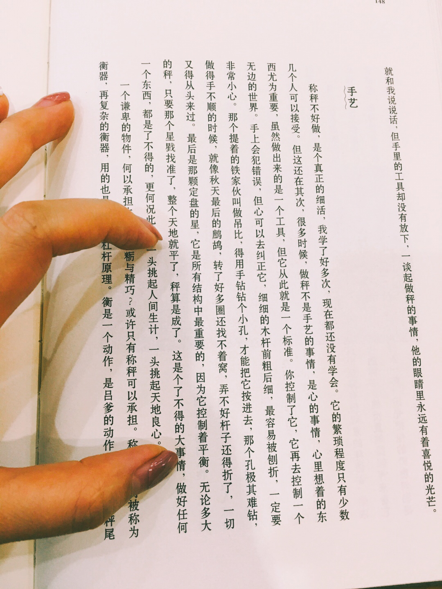

正文: 2017.4.29 晚
也许，这是近段时间最后一次更新这个帖子。热度消失，我们都回归最初的生活。
之前一直觉得自己的生活也就是这样，为什么会得到这么多的赞。下午和前辈聊天说起这事，前辈说，可能他们觉得你的态度，虽然很普通，但是热爱生活的热情，感染到他们了。如果是这样，我觉得那可以解释得通了。顿时豁然开朗。
晚上和同事兼闺蜜看《喜欢你》，刚到家。分享给你们今天收到前辈送的花，以及一个人回家路上的光影。前辈说，祝你们两个今年有桃花，送了我的是2朵，2，跟着我读数字2，就是爱，会有爱的。
下午和前辈主要是谈工作的，前辈说还有你们的生活。我说顺其自然，有句鸡汤这么说，把自己变好，才能遇见更好的人。前辈说，不，你要喝的鸡汤应该是，没有人比你自己更爱你自己，要比任何人都爱你自己才是真理。
这句鸡汤，干了。
祝愿大家都心想事成，但愿我这篇文章，可以带给你生活的热情与勇气。一切都会好的。
再会。


2017.4.26 晚
加班刚结束，饿死了。回到家10点。赚钱养自己不易啊～
2017.4.26 早
有没有一瞬间，你觉得自己特别的孤独，就像这个世界的弃儿一般。
人都是孤独的生物，欲望都是虚妄，都是痴想。
杭州，雨。
2017.4.24晚
其实，可能是照片给人的感觉吧，我的生活，并没有多么多么的优质，走在路上你们也不会关注到我，因为很娇小而且略大众，当然，美还是有一点点的哈哈哈哈哈。
工作压力很大，外界和别人只能给你指点，最重要的要靠自己。我年前工作回家的时候，经常崩溃大哭，真的很努力很努力的去做这个工作，但是没有做好，不被领导认可，好在回家过年后调整心态，起来了…现在压力仍然很大，我领导力挺我在这个位置，不能辜负她，更不能辜负自己，机会就是这个…
我非常非常的独立，但我其实很渴望能够被照顾，但没有人照顾我，我只能独立。做手术我也很害怕，在公司体检的时候被查出来的毛病，当时我一直忍忍忍，到了办公室抱着亲近的一个姐姐哭。下午马上去医院，晚上住进病房，第三天动手术，全身插满管子。不知道是喜是悲，体检那天是我阳历生日…
后来出院休息了一个多2个星期去上班，没人做我的事情，没办法，然后伤口感染，又去医院医生开了1个大口袋的消炎药。后来，我每次去医院，都很恐惧…
还有，从小被爷爷奶奶养大，父爱母爱后来才有，最大的遗憾是子欲养而亲不待。心酸…
我一个人去了非常多的地方，国内国外。但是伙伴们，这个要建立在你有一定的经济基础上。经济基础决定上层建筑，特别是女孩子，一定要经济独立啊。而且当你的薪酬提升后，一次，2次，人会越来越不满足。欲望是无穷，学会控制。不要透支你的信用卡玩来玩去。共勉
我的东西几乎都是在宜家买的，杭州乔司有一个宜家，但是并不表示我就住在那哈哈哈哈哈
你们好奇我年龄的小伙伴，快30了，表具体问了，我很不想去记啊…不要催我结婚，慢慢来…
所以，其实我很普通，单身好，也不好，围城一样～
还有，我刚下班，在吃炒粉干，这个就不po了，惨吧～你看到的光鲜亮丽，只是一个面而已
———————————————
原答案：自拍镇楼，前方预警，XXXX个字，X张图，可能需要Wi-Fi下打开……哈哈哈哈
就在现在，我一个人躺在地毯上，旁边的小米蓝牙小音箱放着网易云音乐随机推荐的歌，桌上有一个花瓶，养着花，花是每月99元定制，每周六上午10点11点送到楼下。一般情况下我还躺在床上玩手机让快递放楼下超市，二般情况我会弹起来，最快速度穿上外衣大衣出去拿，不穿内衣…外面风很大，我住18楼，雨棚坏了一直发出声音。住在靠马路的朝南的房间，外面车来车往，嘀嘀嘀嘀的喇叭声…我葛优躺着玩手机，一个字一个字写下这篇回答…
单身生活是怎样的一种体验，目前我就是忙、工作压力大，过得久了想找一个男朋友但又没有渠道接触，真有渠道了我可能就又怂了懒得去…别人问我最近过得怎么样，我都会回答，还好。
工作日：
周一到周五早上8点起床，8点20出门9点到公司打卡，忙一上午。中午12点和同事要么吃食堂，要么便利店吃车仔面搭配关东煮，要么去隔壁村里吃炒菜，距离太远我会骑小黄车回来～下午继续搬砖到6点，按理说下班了，但是最近经常加班到8、9点，事情很多，有点烦…
一般加班后回家就已经10点了，再吃点点东西，洗澡护肤，我会每天晚上都泡脚，然后用润肤乳涂脚，然后再躺下，回顾下微博、朋友圈、某社交软件今天都有哪些内容，然后11点半睡觉…
现在有一个变化是每周三晚上我一定准时下班，去参加英语角。每次都是地铁转打车，回来小伙伴电瓶车送我到地铁口我又地铁回家。已经参加了4次，每周一次，每次都去。不管怎样，我喜欢英语，锻炼下自己口语，以前只是说自己，现在我能够感觉到，我敢多讲两句了，插别人的话了。每次去之前我都会做笔记，去了都会拍一张图。
周末：
我会在周六打扫卫生，洗衣服。去年4月从公司宿舍搬到现在的出租屋，一个人住27平方米，非隔断的灶台，单独的洗手间，一张床，一个衣柜，超级多的垃圾就是我刚来看到的，前户人家是一家三口…
这个是之前：
我当时看了很多知乎上出租房改造的回答，然后大刀阔斧的去宜家采购，然后就有了以下：


没有洗衣机，也没打算买，买了也放不下。于是冬天我就自己手洗，开热水器的热水，好累，大衣拿去给外面洗。我决定今年夏天买一个洗衣机，或者搬家后。
继续说周末，周末我一般会宅一天，会自己去超市买菜回家做饭，一个人吃，朋友来吃。
在这里有2个最好的朋友，一个现同事，一个前同事，一男一女。来我家吃饭，我做饭他们吃，然后一起躺在地毯上各种聊天吐槽，晚上又饿了叫烧烤，每人一个猪蹄，一边喝酒一边吃烧烤一边聊天，结束了大家要卸妆，又一个一个跑到洗手间洗脸，回来又一起躺地毯上脚翘在墙上，敷面膜。一般情况下11点12点他们走回家，离得不远，现在越来越久了，上次2点回去。
然后我们说，下次每人自备睡衣放在家里，去谁家都可以过夜。
上图：
自己宅一天，另外一天基本会出去溜达，和朋友去逛街，一起去爬山，去喝下午茶，去酒吧，去看电影，晚上去游泳，想看泳照？哈哈哈哈不给。
对了，以上的事情，我一个人也做。甚至一个人在中秋节吃火锅，一个人去医院看病做手术，要不是因为有风险要家长签字我不会打算告诉家人的，而那次我也只告诉了弟弟让他来签字，父母至今不知道我生过病做过手术。其实也还好。
继续上图：
我老家在西南那边，一个人来杭州快3年，一年基本回家2次，年中和过年。法定节假日我会一个人出去旅游，大学去了10多个城市，来杭州后去了香港、澳门，韩国、菲律宾、台湾。说得最多的一句话是：你可以给我拍一张照吗？can u help me take a photo? :)
无图无真相：
垦丁的夜晚，迷人又忧伤

垦丁的海，不知道名字
首尔韩服
澳门的老街道，再想想威尼斯人那些赌场…
我喜欢在没有工作的时候躺地毯上，看书，看电影，看剧，看综艺，都会给自己准备水果或者甜点：


补图：
忘记秀它了
虽然很菜，但是我很努力：）
我坚持得最久的事情，8年了
最近工作上被提升为见习主管，还要带人，事情很多，压力很大。而且和别人对比起来，才发现自己被温水煮青蛙很久了，不动脑子，不去思考。虽然被提拔，但是自己的成长还是有点慢。压力很大很累的时候下班回家大哭，哭完了洗澡睡觉。
有些人就是这样，想要追求优质有品质的生活，却没有付出足够的努力，所以只能叹生活艰辛，又自责不努力，但下一次还是这样，平庸的淹没在人海里。几年，你和别人的区别就出来了。
上次我去交房租，每个月涨了150，一次性交半年。工资涨没多快，其他涨得飞快。
在外面看似做白领，外表光鲜亮丽（我一般般哈哈哈哈哈），但房租、买衣服、买化妆品、吃吃喝喝，钱很难存下来。单身汪久了就想找一个人陪着，我虽然很独立，大多数人都很独立，但都有寂寞孤独受伤需要人陪需要人安慰的时候。我昨天给妈妈打电话还问了好几遍我有没有找到另一半，带回家去给她看。别人家出来玩都带着孙子了…我其实也想，但是就是没有啊，我安慰她说慢慢来会有的，但其实连我自己都不知道那个人还在哪里，妈蛋怎么还不来！！！来了先跪搓衣板，妈蛋让老娘好等…
一个人过，久了就不想说话，很懒，不想要求他人做什么，随意。
然后，一个人我可以过，但我更希望有另外一个人来，和我一起。
不管有没有，我打算把户口迁移过来，未来在杭州定居，有自己的事业，现在是一般般努力，我会再努力一点，再一点点，让自己过得越来越好。
很喜欢《东京女子图鉴》，很多场景似曾相识，希望在物质上能够像女主一样，慢慢的可以买高档内衣、高档化妆品，买一个小小的单身公寓，自己住住。带父母到处玩，让他们不担心钱。是的，我就是这么坦白自己对钱的喜欢。
最后一张图镇楼，也是我想和大家共勉的一句话，加油。